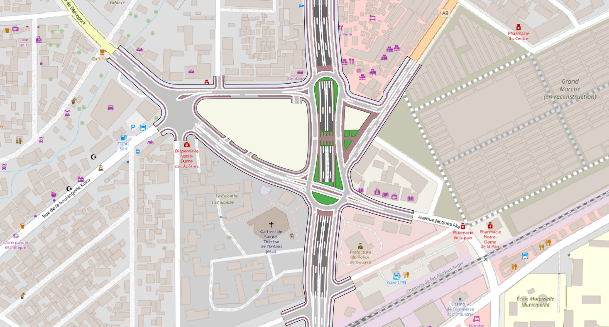

Ministère de l'Enseignement supérieur et de la Recherche
Faculté des sciences de Tunis
Département : Géologie
Mémoire
Présenté en vue de l’obtention du diplôme de Mastère professionnel en Sciences Géomatiques
Parcours : TOPOGRAPHIE ET PROJETS TERRITORIAUX
Élaboré par :
CHEMLI WICEM
Intitulé
Web Mapping informatif du projet d’aménagement urbain de Bouaké

Contexte du projet
Bouaké, deuxième agglomération de Côte d'Ivoire après Abidjan, constitue un carrefour stratégique situé au croisement des principaux axes routiers nationaux et sous-régionaux reliant Abidjan, Yamoussoukro, le Burkina Faso et le Mali. Forte de près d'un million d'habitants, la ville joue un rôle majeur dans les échanges commerciaux, le transport de marchandises et le développement agro-industriel.
Cependant, la croissance démographique et l'augmentation continue du trafic entraînent une congestion importante sur plusieurs carrefours structurants, notamment au Carrefour Bouaké. Les temps de parcours peuvent y doubler, voire tripler, aux heures de pointe, générant des pertes économiques et une dégradation de la qualité de service.
L'aménagement d'un échangeur dans le cadre du Projet de Transport Urbain d'Abidjan (PTUA Phase 2) vise à améliorer durablement la fluidité des déplacements, renforcer la sécurité routière et soutenir le développement économique régional.
M. CHAÂBENI ANIS : Encadrant académique
M. BEN HMIDA ANIS : Encadrant professionnel